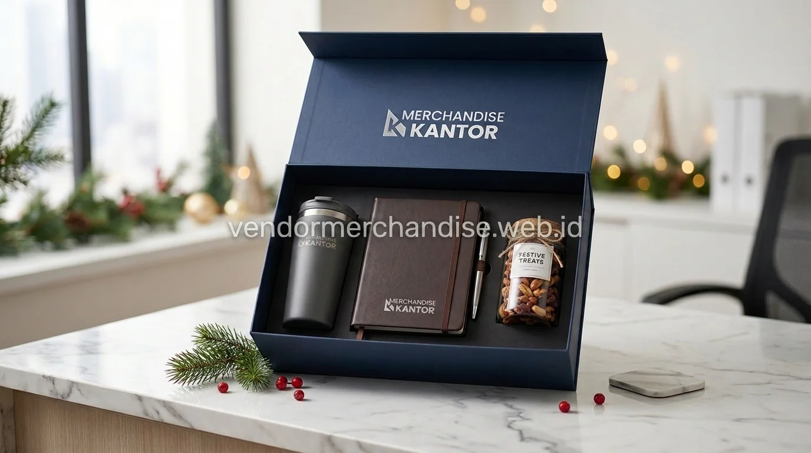

Tumbler dan Drinkware Custom untuk Klien Korporat
Tumbler dan drinkware custom adalah pilihan merchandise untuk klien yang paling banyak dipesan karena fungsinya dipakai setiap hari. Produk ini menjaga nama perusahaan tetap terlihat dalam aktivitas klien sehari-hari.
Beberapa varian yang tersedia:
- Tumbler stainless steel dengan cetak logo satu warna atau full color
- Botol minum sport dengan tutup praktis untuk klien yang aktif
- Mug keramik custom untuk kebutuhan meeting dan hadiah meja kerja
- Tumbler set dengan kemasan box eksklusif untuk hampers akhir tahun
Drinkware custom cocok dipesan dalam jumlah menengah hingga besar karena harga satuan menjadi lebih efisien ketika dipesan secara bulk.
Tas dan Perlengkapan Kerja untuk Client Gift
Tas dan perlengkapan kerja termasuk kategori merchandise untuk klien yang memberikan kesan profesional sekaligus fungsional untuk aktivitas bisnis harian klien.
Rekomendasi produk pada kategori ini:
- Tas tote kanvas dengan bordir atau sablon logo perusahaan
- Tas laptop dan tas dokumen untuk klien level eksekutif
- Pouch dan dompet organizer untuk kelengkapan perjalanan bisnis
- Notebook kerja dengan cover custom dan set pulpen eksekutif
Kombinasi tas dan alat tulis sering dipilih sebagai paket client gift untuk penutupan kerja sama atau kunjungan kantor.
Hampers dan Paket Souvenir Premium untuk Momen Khusus
Hampers premium menjadi pilihan merchandise untuk klien saat perusahaan ingin memberikan kesan lebih personal, misalnya pada momen ulang tahun perusahaan klien, hari raya, atau akhir tahun.

Isi paket hampers yang umum diminta:
- Kombinasi drinkware, snack premium, dan aksesoris kerja dalam satu box
- Hampers tematik hari raya dengan kemasan eksklusif berlogo perusahaan
- Paket apresiasi akhir tahun berisi kalender, agenda, dan merchandise fungsional
- Hampers custom sesuai permintaan khusus dari tim procurement
Paket hampers biasanya dipesan menjelang momen tertentu sehingga waktu produksi dan pengiriman perlu diperhitungakan lebih awal.
Merchandise Elektronik dan Gadget Pendukung untuk Klien
Kategori elektronik menjadi pilihan merchandise untuk klien yang ingin memberikan kesan modern dan bernilai guna tinggi, terutama untuk klien di level manajerial.
Produk yang tersedia pada kategori ini:
- Power bank custom logo dengan kapasitas standar kebutuhan kerja
- Speaker portable untuk hadiah acara gathering atau seminar klien
- USB flashdisk custom untuk kebutuhan dokumen dan presentasi
- Charger dan kabel data set dalam kemasan pouch branding
Merchandise elektronik umumnya diposisikan sebagai hadiah premium karena nilai satuannya lebih tinggi dibanding kategori drinkware atau alat tulis.
"Corporate gift untuk klien bukan sekadar hadiah, melainkan investasi jangka panjang dalam menjaga kepercayaan dan relasi bisnis."
— Erlang Sinatrya, Penulis Merchandise Kantor

Merchandise Kantor sebagai Vendor Corporate Gift untuk Klien
Merchandise Kantor melayani pemesanan merchandise untuk klien dengan sistem custom logo, pilihan bahan, dan opsi kemasan yang disesuaikan kebutuhan perusahaan. Layanan mencakup konsultasi produk, sample sebelum produksi massal, hingga pengiriman ke alamat kantor klien atau langsung ke lokasi acara.
Tim Merchandise Kantor membantu proses dari pemilihan produk, desain logo, hingga estimasi waktu produksi agar merchandise siap sebelum momen bisnis yang direncanakan.